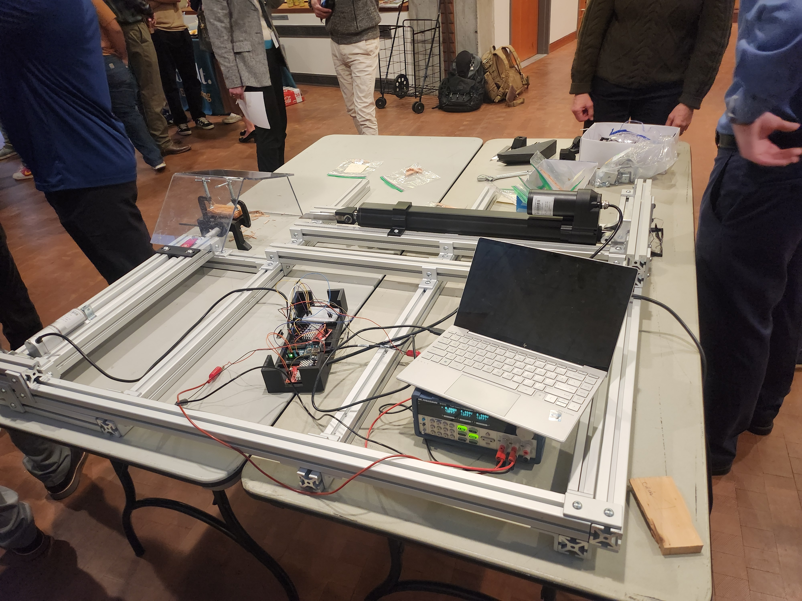
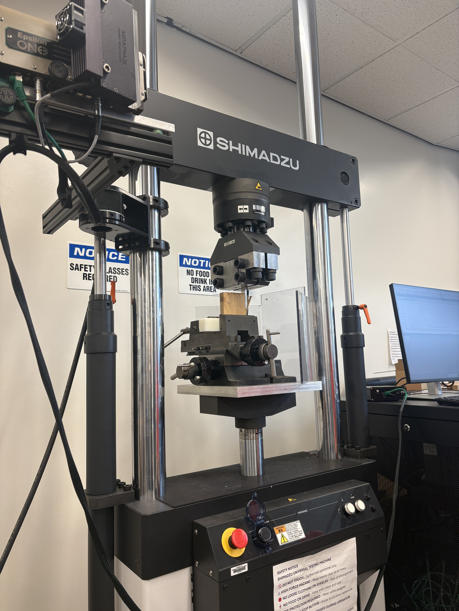
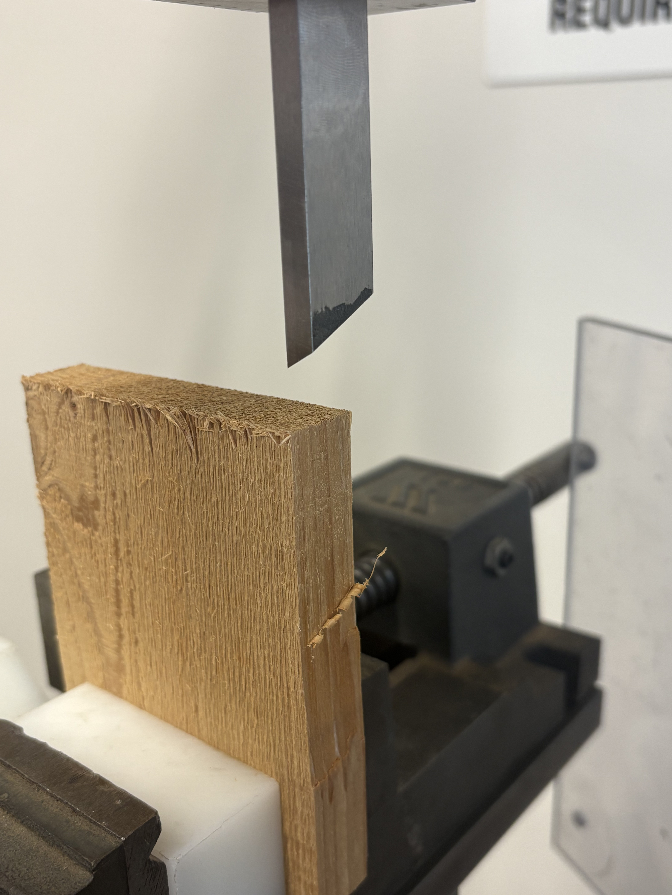
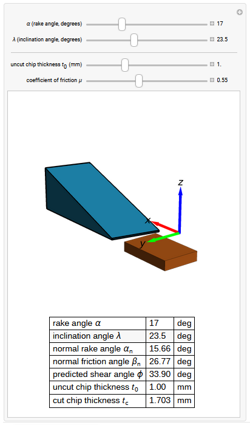

Projects
High Precision Wood Wool Cutter - ME Capstone



The HPWICT (High Precision Wood Wool Industrial Crafting Table) is a machine designed to shave wood into precisely dimensioned wool shavings for use in sustainable building materials. The project began with wood wool chip dimension predictions based on oblique cutting mechanics. Blade rake angle, inclination angle, and depth of cut were all varying parameters in this prediction. Ideal paramters were then implemented in the manufacturing of three high speed steel blades for cutting experiments. The experiments proved the parameters used in the theory were correct for the final machine. The tabletop cutter was then designed, assembled, and tested until it met all requirements of the project.
Skills: SolidWorks, Wolfram Mathematica, UTM operation, 3D printing, CNC milling, manual milling, BOM building, experiment design, statistical analysis.
Chip Thickness Prediction Model - Published Mathematica Demonstration

A product of the HPWICT project is a published proof of cutting mechanics that acted as the fundamental theory for the Capstone. It utilizes all input parameters in the project, including rake angle, inclination angle, feed rate, wood material properties, and depth of cut. This was the primary reference for the final blade design.
Skills: Wolfram Mathematica.
Published Demonstration